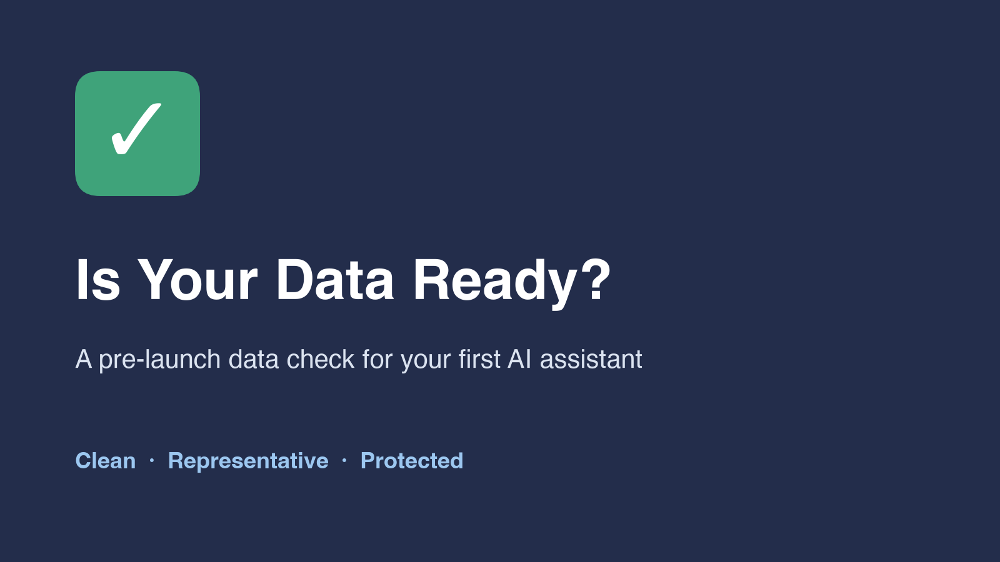

Title
Is Your Data Ready? A pre-launch data check for your first AI assistant
- Artifact 4
- Checklist
- Data quality
- Bias
- Privacy
Introduction
Teams building their first internal AI assistant spend most of their time choosing a model and writing prompts. The problems that show up after launch usually come from the data: two versions of the same runbook that disagree, docs that only cover one team, and pages the assistant can show to people who were never allowed to read them. This page is a short check to run on your data before the assistant goes live. It comes from a course exercise where an AI coach walked me through three data problems that machine learning teams run into, and asked me to defend each decision.
Description
The exercise had three scenarios, one for each stage where data goes wrong: cleaning it, checking who it represents, and sharing it safely. For each one, the coach asked what I would do and why, then pushed on the weakest part of my answer. Below are the three scenarios, what I proposed, and what each one means for an assistant that answers questions from a team's own documents.
1. Clean the sources before anything else
The scenario: a company wanted to train a sentiment model on 800,000 public customer reviews full of duplicates, missing fields, mixed languages, emoji-only reviews, likely bot spam, and labels taken partly from star ratings.
What I proposed: keep an untouched copy of the raw data, look at what's actually in it, then remove duplicates, deal with spam and fix formatting, and only then split it into training and test sets. The order matters because if you split first, the same review can land in both sets, and the test score looks better than the model really is. My first answer was just "remove duplicates." When the coach asked about reviews that are almost the same, I changed it to grouping similar reviews and keeping each group on one side of the split. I also proposed hand-labeling a sample to check the labels that came from star ratings, and comparing the language and rating mix before and after cleaning, so I'd know if cleaning had quietly removed a group of reviewers.
For an internal assistant: your docs are the data. Keep an untouched copy before cleaning anything. Find duplicate and outdated pages, and decide which version wins instead of letting the assistant pick. Don't throw out pages just because they are short, informal or in another language; those may be the only docs some teams have. And keep your test questions away from the exact pages they were written from, or the assistant will look better in testing than it is.
2. Check who the data represents, and whether your tests still apply
The scenario: a résumé-screening model trained on ten years of one company's hiring decisions tested well on held-out data from that history. The company wanted to use it in a new country at ten times the volume.
What I proposed: the main problem is the label. "Was hired" isn't the same as "would be good at the job," so the model learns whatever the company favored in the past. And a test set from the same company and the same years can't show how the model will do in a new country. Before scaling, I'd want testing on local data, error rates for each group instead of one overall accuracy number, and a small pilot where a person reviews every rejection. Applicants should be able to appeal, outcomes should be monitored after launch, and there should be a rule for pausing the system. The people I was most worried about were qualified applicants rejected without ever finding out why.
For an internal assistant: an assistant built and tested by one team measures how well it works for that team. Before rolling it out company-wide, collect test questions from the teams you're adding, report results for each team instead of one overall score, and start with a small pilot that has a way to report bad answers and a plan to pause it.
3. Protect the data, and decide who's in charge of it
The scenario: two hospitals wanted to build a diagnostic model together without moving each other's raw patient records, even though their coding practices differed.
What I proposed: my first idea was for one hospital to send the other a de-identified copy, with names and ID numbers removed. When the coach pushed back, I realized that a rare diagnosis plus a date and a zip code could still point to one patient. I hadn't heard of moving the computation instead of the data; the coach gave me that hint, and I ended up with federated learning, where each hospital trains on its own records. I added secure aggregation, access controls, encryption and audit logs. I noted that differential privacy might cost accuracy on rare conditions. Before training, I'd check that both hospitals label data the same way, and I'd test the model separately at each hospital. I also wanted a written governance agreement covering who can use the model and for what.
For an internal assistant: privacy, security and governance are three different questions. Privacy is what the assistant can reveal about people. Security is who can get at the data and the system. Governance is who decides what goes in, what it can be used for, and what happens when something goes wrong. A common internal failure is the assistant showing someone a document they don't have permission to open. OWASP lists this as a risk for assistants that search a document store, and recommends permission-aware access controls (OWASP GenAI Security Project, n.d.). So the assistant should check the user's access before it uses a document in an answer.
![Checklist titled Before the assistant goes live, check the documents behind it. Section 1, Is it clean? Keep an untouched copy of every source before you clean anything. Find duplicate and outdated pages, and decide which version wins. Log how many pages each cleaning rule removed, and from which teams. Keep test questions away from the pages they were written from. Section 2, Does it represent everyone who will use it? Collect test questions from every team you are adding. Report results for each team, not one overall score. Start with a small pilot, a way to report bad answers, and a pause rule. Section 3, Is it protected, and who is in charge of it? Check the user's access before a document is used in an answer. Log who asked what and which documents were used. Name an owner: what goes in, what it is for, who acts on a leak. Write down the risk that is left, and test for it.](../assets/data-ready/data-check.png)
Scenarios come from the Data Challenge Scenarios exercise in AIML-500. The decisions and reasons are mine. The coach's summary of the session and my reflection are in my assignment submission (PDF).
Objective
I did the original exercise for Assignment 4.3 in AIML-500, an interactive session with an AI coach on data challenges in machine learning: data quality and cleaning; bias, distribution shift and responsible scaling; and data sharing, privacy, security and governance. For this portfolio, I turned my answers into a check that engineers and team leads can run on their data before their first internal assistant goes live.
Process
- Cleaning. I gave an order of steps and a reason for it: split last, so no review ends up in both the training and test sets. The coach's question about reviews that are almost the same showed me that deleting exact copies wasn't enough, and I changed my plan to grouping related reviews before the split.
- Bias and scaling. I went straight to the label problem and the same-company test set, then built the rollout plan: local testing, error rates by group, a pilot with human review, appeals, monitoring and a pause rule.
- Privacy, security and governance. This is where I learned the most. My de-identification answer didn't hold up, and I only reached federated learning after a hint. The coach then explained its limits, and I built them into my final design.
- Checked the coach's lessons against sources. I didn't want this page to rest on what a chatbot told me, so I looked for a published source behind each scenario. Cleaning: a survey of machine learning research found data leakage in 17 fields, affecting 294 papers, and lists duplicates and preprocessing the whole dataset before splitting among the causes (Kapoor & Narayanan, 2023). Labels: a health care algorithm predicted cost instead of illness, so at the same risk score Black patients were considerably sicker than White patients; the authors warn that convenient stand-ins for the real target can be an important source of bias (Obermeyer et al., 2019). "Was hired" is the same kind of stand-in for "good at the job." One overall score: IBM's gender classifier was about 88% accurate overall but wrong on 34.7% of darker-skinned women and 0.3% of lighter-skinned men (Buolamwini & Gebru, 2018). De-identification: researchers estimated that 99.98% of Americans could be correctly re-identified in any dataset using 15 demographic attributes (Rocher et al., 2019). Federated learning: a review of its use in health care says it "does not solve all potential privacy issues," that privacy techniques can lower accuracy, and that data quality, bias and standardization still have to be solved (Rieke et al., 2020, pp. 4–5).
- Turned it into a check. I grouped the lessons into the three questions in the image above and translated each course scenario into what it means for an assistant built on a team's own documents.
Where this check falls short
- It is built from one course exercise and a few sources. I haven't run it on a real assistant yet, so it is a starting point for a team's own rules.
- It doesn't cover legal or compliance requirements. Anything involving personal data still needs the people in your organization who own those decisions.
- The coach said the area I most need to work on is threat modeling: naming who might attack or misuse the system and what they could do. The check asks you to write down the risk that's left, but it doesn't teach you how to find it.
- For the sources, I read the abstracts and the passages I cite. I didn't work through the full studies.
Tools and Technologies Used
- Claude (Anthropic)Ran the AIML-500 Data Challenge Scenarios coach
- Primary sourcesScience, Patterns, Nature Communications, npj Digital Medicine, PMLR and OWASP
- Crossref and OpenAlexCitation details and abstracts for each paper
- Python (matplotlib)Drew the banner and the data check
- Claude (Anthropic)Checked each claim against the sources and helped polish the wording
- GitHub PagesHosts this portfolio
Value Proposition
This artifact shows that I can see data problems before they turn into model problems, and that I can turn course scenarios about reviews, hiring and hospitals into a check a software team can use. For a team building its first internal assistant, it gives a short list of things to fix in the data before users start trusting the answers.
Unique Value
Most guides to building an internal assistant focus on the model and the prompt. This check starts from the documents, which is where internal assistants usually go wrong, and it keeps apart three questions that teams tend to blur together: is the data clean, does it represent everyone who will use the assistant, and who is allowed to see and decide what. It also comes from decisions I had to defend, including one that didn't hold up, and each scenario is tied to a published source.
Relevance
An internal assistant is only as good as the documents behind it. Stale runbooks give confident wrong answers, docs from one team make the tool fail everyone else, and missing access checks can leak documents to the wrong people. Each of these is a data problem that is cheaper to find before launch than after people stop trusting the tool. This is the fourth artifact for the same audience as the others: engineers and team leads building their first internal AI assistant.
References
- Anthropic. (2026). Claude [Large language model]. https://www.anthropic.com/claude
- Buolamwini, J., & Gebru, T. (2018). Gender shades: Intersectional accuracy disparities in commercial gender classification. Proceedings of Machine Learning Research, 81, 77–91. https://proceedings.mlr.press/v81/buolamwini18a.html
- Kapoor, S., & Narayanan, A. (2023). Leakage and the reproducibility crisis in machine-learning-based science. Patterns, 4(9), Article 100804. https://doi.org/10.1016/j.patter.2023.100804
- Obermeyer, Z., Powers, B., Vogeli, C., & Mullainathan, S. (2019). Dissecting racial bias in an algorithm used to manage the health of populations. Science, 366(6464), 447–453. https://doi.org/10.1126/science.aax2342
- OWASP GenAI Security Project. (n.d.). LLM08:2025 Vector and embedding weaknesses. Retrieved November 22, 2026, from https://genai.owasp.org/llmrisk/llm082025-vector-and-embedding-weaknesses/
- Rieke, N., Hancox, J., Li, W., Milletarì, F., Roth, H. R., Albarqouni, S., Bakas, S., Galtier, M. N., Landman, B. A., Maier-Hein, K., Ourselin, S., Sheller, M., Summers, R. M., Trask, A., Xu, D., Baust, M., & Cardoso, M. J. (2020). The future of digital health with federated learning. npj Digital Medicine, 3, Article 119. https://doi.org/10.1038/s41746-020-00323-1
- Rocher, L., Hendrickx, J. M., & de Montjoye, Y.-A. (2019). Estimating the success of re-identifications in incomplete datasets using generative models. Nature Communications, 10, Article 3069. https://doi.org/10.1038/s41467-019-10933-3